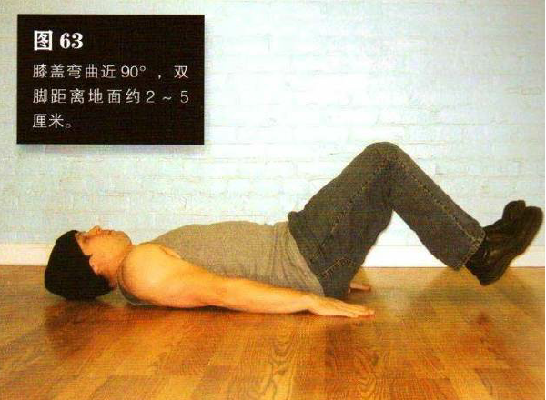
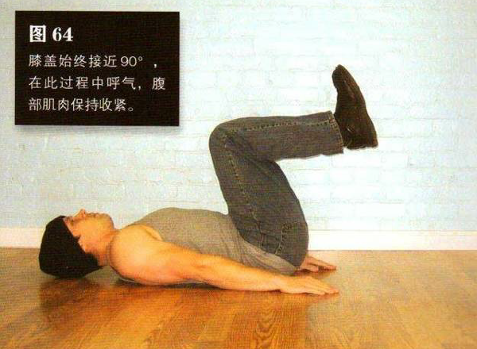

平躺在地上，双腿并拢，双手置于身体两侧的地板上。膝盖弯曲近 90°双脚距离地面约 2一 5 厘米。双手用力向下按压地板，这样有助于保持身体稳定。
然后平缓地抬起膝盖，越过髋部，直到大腿与地面垂直、小腿与地面平行，整个过程中膝盖始终接近 900。在此过程中呼气，腹部肌肉保持收紧。这是该动作的结束姿势（图 64）。暂停 1 秒钟，进行反向动作。降低双脚，回到起始姿势，并在此过程中吸气。在整组练习中双脚都不能接触地面。
初级标准：1 组，10 次
中级标准：2 组，各 20 次
高级标准：3 组，各 35 次